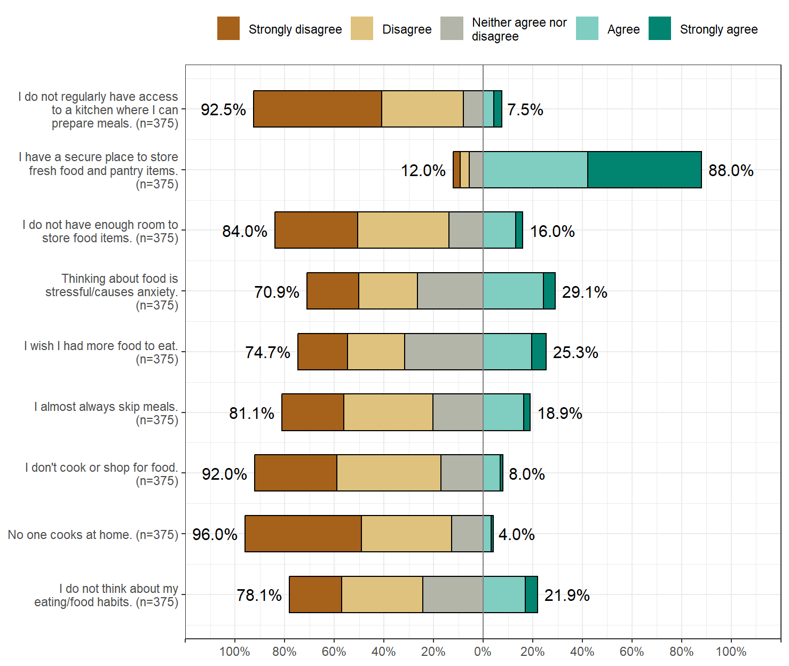
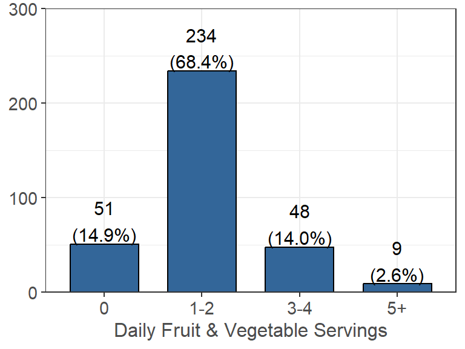
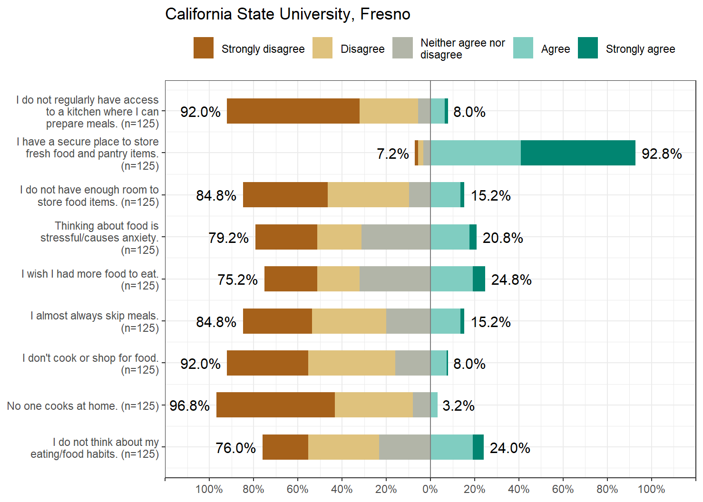
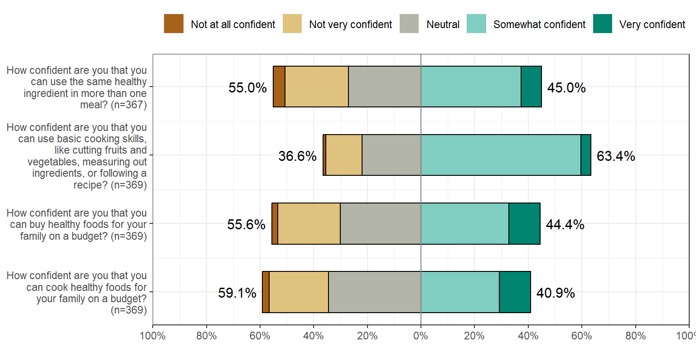
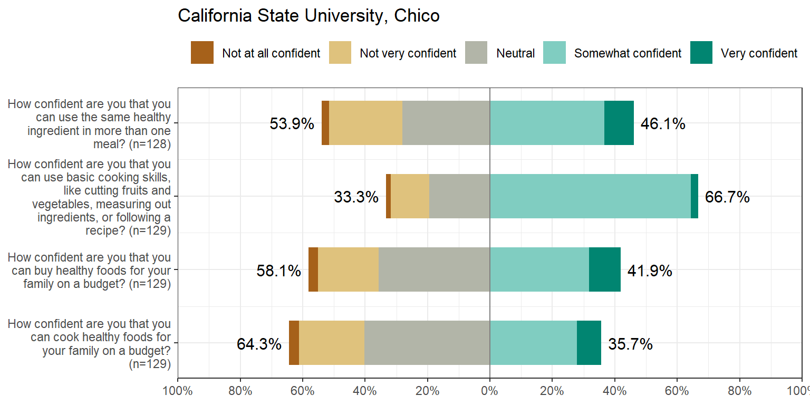
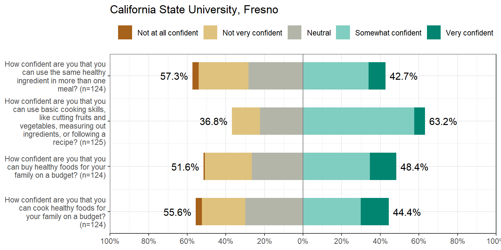
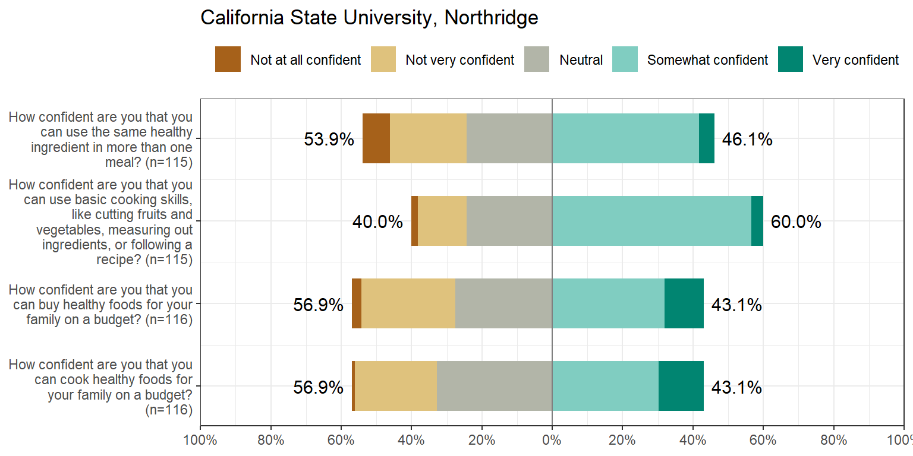

Eating Habits
The following questions were asked in regards to students eating habits on a current, daily, and weekly basis. Students were asked how/if they prepare food at home, their daily consumption of fruits/vegetables and sugar, and their weekly habits of eating out and alcohol consumption. They were also asked about how confident they felt about buying/preparing healthy foods at home.
Current Eating/Cooking Habits
For each of the following statements, indicate how strongly you agree or disagree about your current eating and cooking habits:  Figure 8.1: Current Eating and Cooking Habits
üè´ üìä Campus Breakdown
Click here for campus breakdown of CalFresh eligible students.
 Figure 8.2: Eating/Cooking Habits by Campus
Daily Consumption
Fruits & Vegetables
How many servings of fruits and vegetables do you usually consume per day? (not including fruit juices) (n=342, 82% of 415 reporting).
1 serving= 1 medium piece of fruit; 1/2 cup fresh, frozen, or canned fruits/vegetables; 1 cup salad greens; or 1/4 cup dried fruit.
Figure 8.3: Daily Fruit & Vegetable Consumption
Looking at the daily consumption of fruits and vegetables, the majority of people claim to eat between 1-2 servings (234 people). 51 people claim to eat 0 servings, 48 people claim to eat 3-4 servings, and 9 people claim to eat 5+ servings.
üè´ üìä Campus Breakdown
Click here for campus breakdown of Daily Fruits & Vegetables.
Figure 8.4: Daily Fruits & Vegetables by Campus
From the above figure, we can see that the distribution for the number of daily servings of fruits and vegetables for each campus is approximately the same. Fresno seems to have the most students who eat 0 daily servings, while Chico has the most students who consume 5+ daily servings.
Sugar/Energy Drinks
How many ounces of regular soda/cola/pop, sports drink, or energy drinks do you consume each day? (n=363, 87% of 415 reporting). Figure 8.5: Daily Sugar/Energy Drink Consumption
Looking at daily consumption of regular soda/cola/pop, sports drink, or energy drinks the majority of people claim to drink 0 ounces (196 people). 96 people claim to drink between 1-8 ounces, 37 people claim to drink between 9-16, and only a small number of participants claim to drink 17 or more ounces per day.
üè´ üìä Campus Breakdown
Click here for campus breakdown of Daily Sugar/Energy Drinks.
 Figure 8.6: Daily Sugar/Energy Drinks by Campus
| School | Don’t Consume Sugar/Energy Drinks |
|---|---|
| California State University, Chico | 55.8% |
| California State University, Fresno | 49.2% |
| California State University, Northridge | 57.0% |
Table 8.1: Proportion of Students No Consumption
From the above figure, we can see that Chico has the most students who do not consume any sugar or energy drinks daily. However, if we look at the number of students relative to their campus size (number of students who responded to the survey question per campus), we can see that Northridge actually has the highest proportion of students who do not consume any sugar or energy drinks daily.
Weekly Consumption
Eating Out
How frequently do you eat from fast food restaurants, convenience stores, or vending machines for a meal or meal replacement? (n=364, 88% of 415 reporting). Figure 8.7: Weekly Eating Out Consumption
Looking at the weekly consumption of eating fast food, the majority of people claim to eat out 1-2 times per week (213 people). 75 people claim to eat out 3-4 times, 59 people claim to eat out 0 times, and only a small minority of people claim to eat out 5 or more times per week.
üè´ üìä Campus Breakdown
Click here for campus breakdown of weekly eating out.
Figure 8.8: Weekly Eating Out by Campus
| School | Eating Out 1-2 Times Weekly |
|---|---|
| California State University, Chico | 61.4% |
| California State University, Fresno | 61.2% |
| California State University, Northridge | 52.6% |
Table 8.2: Proportion of Students Eating Out
From the above figure, we can see that Chico has the most students who eat out between 1-2 times per week. Again, if we look at the number of students relative to their campus size (number of students who responded to the survey question per campus), we can see that Chico also has the highest proportion of students who eat out approximately 1-2 times per week.
Alcohol Consumption
How often do you consume at least one serving of alcohol (n=361, 87% of 415 reporting). If consumed, how many servings of alcohol do you consume when you drink alcohol (n=93, 22% of 415 reporting). Figure 8.9: Weekly Alcohol Consumption - Days & Servings
Looking at the weekly alcohol consumption, the majority of people claim to consume alcohol 0 days per week (266 people). 82 people claim to drink 1-2 days per week. Only a small number of people claim to drink 3 or more days per week. Of the people who do consume alcohol, the majority consume 1-2 servings (43 people). 26 people claim to drink 3-4 servings, 18 people claim to drink < 1 servings, and only a small number drink 5 or more servings.
üè´ üìä Campus Breakdown
Click here for campus breakdown of weekly alcohol consumption.
Figure 8.10: Weekly Drinking by Campus
| School | Do Not Consume Alcohol |
|---|---|
| California State University, Chico | 61.7% |
| California State University, Fresno | 81.7% |
| California State University, Northridge | 78.8% |
Table 8.3: Proportion of Students Drinking
From the above figure, we can see that Fresno has the most students who do not consume any alcohol per week. Again, if we look at the number of students relative to their campus size (number of students who responded to the survey question per campus), we can see that Fresno also has the highest proportion of students who do not consume any alcohol per week. We can also see that Chico has the highest proportion of students who consume alcohol between the three campuses (roughly 38.3%).
Food Comfort
The following questions pertain to how comfortable you feel about buying or preparing food: Figure 8.11: Buying/Preparing Food Comfort
üè´ üìä Campus Breakdown
Click here for campus breakdown of food comfort.
 Figure 8.12: Food Comfort by Campus
Physical Activity
Click here to go to the Physical Activity page.
Mental Health
Click here to go to the Mental Health page.
Sleep
Click here to go to the Sleep page.
Funding
Partially funded by USDA SNAP, known in California as CalFresh, an equal opportunity provider and employer, and the California Department of Social Services. Any use of these results in further work must use the following citation:Center for Healthy Communities, "Basic Needs Survey", June 2021. Retrieved on xx-xxx-xxxx from https://chicocalfresh.github.io/bns-pilot2-website/index.html